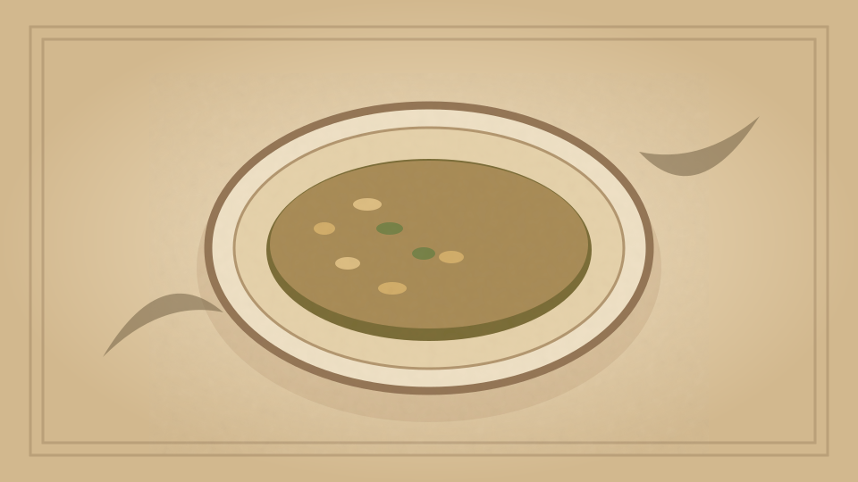

1910 · Fannie Merritt Farmer · SOUPS
Almond Soup
The Boston Cooking-School Cook Book

Historical Recipe
The following text is extracted from the 1910 edition, retaining historical terminology and quantities.
Original Ingredients & Directions
⅔ cup almonds
6 bitter almonds
4 tablespoons cold water
⅛ teaspoon salt
3 cups White Stock III
1 small onion
3 stalks celery
3 tablespoons butter
3 tablespoons flour
2 cups scalded milk
1 cup cream
Salt and pepper
Blanch, chop, and pound almonds in a mortar. Add gradually water and salt; then add stock, sliced onion, and celery, let simmer one hour, and rub through a sieve. Melt 126 butter, add flour, and pour on gradually the hot liquor; then add milk, cream, and salt and pepper to taste. Serve with Mock Almonds.
Automatically extracted transcription; editorial verification pending. Historical instructions may not meet modern food-safety standards.